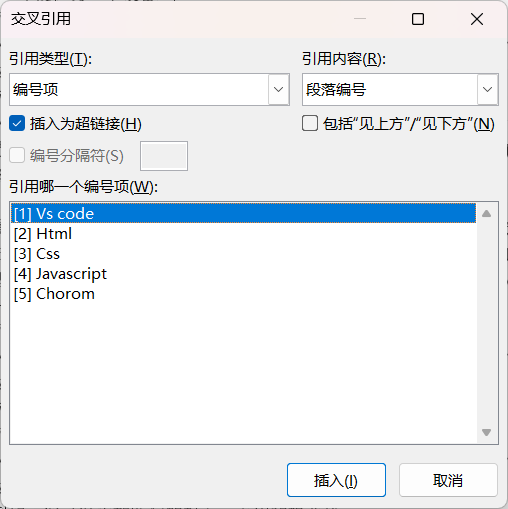
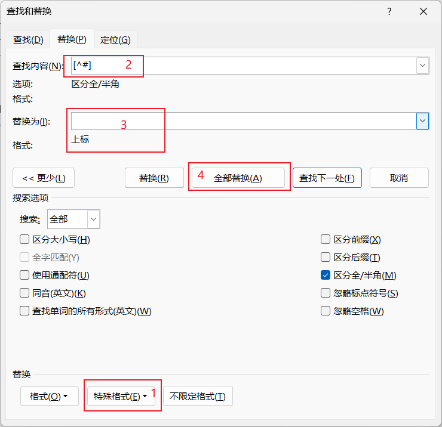
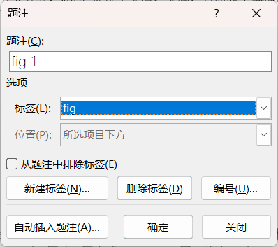
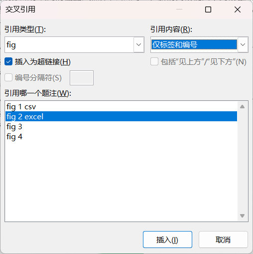

多级列表和目录
Lists & TOC
- . 下载虚拟校园的设计与实现
- . 调整功能区：显示编辑标记，打开标尺、导航窗格
- 查找与替换
- . 通过查找替换Ctrl + H，去掉各标题的静态编号：分别使用任意数字和.、任意数字和空格
- 多级列表
-
创建："开始" → "段落" → "多级列表" → "更多" → "定义新的多级列表"
. 级别1：链接 到标题1样式；编号格式：大写数字，如第一章；缩进0，所有级别对齐、缩进都调整为0；编号后采用空格
. 级别2：链接 到标题2样式；编号格式：阿拉伯数字；缩进0，采用"正规形式编号"；编号后采用空格
. 级别3：链接 到标题3样式；编号格式：阿拉伯数字；缩进0，采用"正规形式编号"；编号后采用空格
应用：通过"选择" → "选择格式相似的文本"，快速为各标题指定相应的标题样式，如标题1、标题2、标题3，在页面左侧的"导航视图"中，可以看到文档的框架修改：根据需要修改各标题样式；其它格式依据题干要求设置. 标题1：居中对齐
. 标题2：左对齐
. 标题3：左对齐
- 目录
-
在引言前插入"分页符"，使其新起一页在关键词后："引用" → "目录" → "自动目录1"根据需要修改目录样式
. 如果章节编号从2开始：取消目录所在行的编号，并更新目录，章节编号显示正常
. 如3级目录样式异常，段前段后有行：修改对应的样式TOC3，将间距调整为0，单倍行距，同其它1级目录样式TOC1、2级目录样式TOC2样式保持一致；更新目录，显示正常
其它：页眉、页脚和其它请自行设计；建议放在最后设计 - 提交
- . 将处理后的Word文档转换为PDF，以学号+姓名的方式命名，如20231100张树彬，提交到学习通对应的作业
- 考核方式
- . 随堂作业并提交
拓展练习
- . 先插入题注再交叉引用
- . 删除部分引用后，全选文档，右键选择"更新域"或按F9刷新，保持引用的连贯性
- 参考文献的交叉引用
-
准备参考文献，并设置编号格式如[1]、[2]等等将光标定位在正文某处，不需要选择文本对象，单击"插入交叉引用"，选择引用类型为"编号项"，引用内容为"段落编号"，如图所示。光标处出现对应编号项
 插入交叉引用 利用查找替换的"特殊格式" → "任意数字"，将所有引用调整格式为上标；如果参考文献超过10，要额外多进行一次替换 调整上标 -
Tips上标：CTRL + Shift + =下标：CTRL + =
- 图片的交叉引用
-
准备文档，其中插入了若干张图片选择某张图片，在下方插入题注，默认标签是"图表"，自定义标签为"fig"，如下图
 图片题注 定位光标在文档某处需要引用的地方，插入"交叉引用"，指定类型和内容如下 图片题注 调整引用编号的格式 - 表格的交叉引用
- . 操作同上。先为表格添加题注，再插入交叉引用